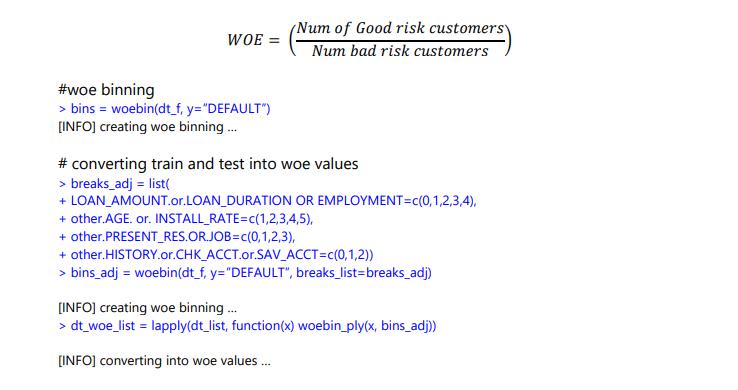
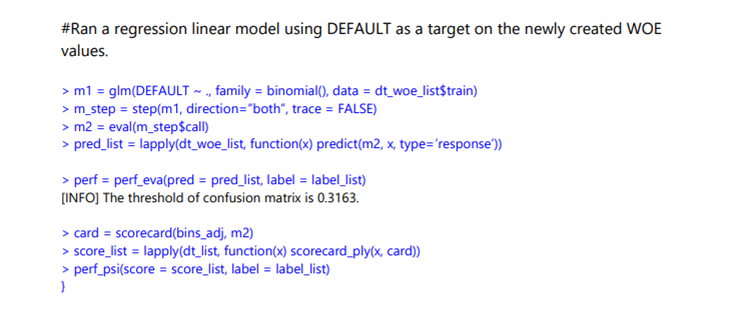
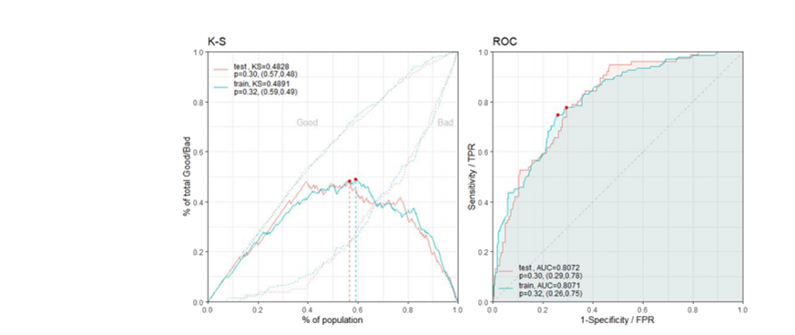
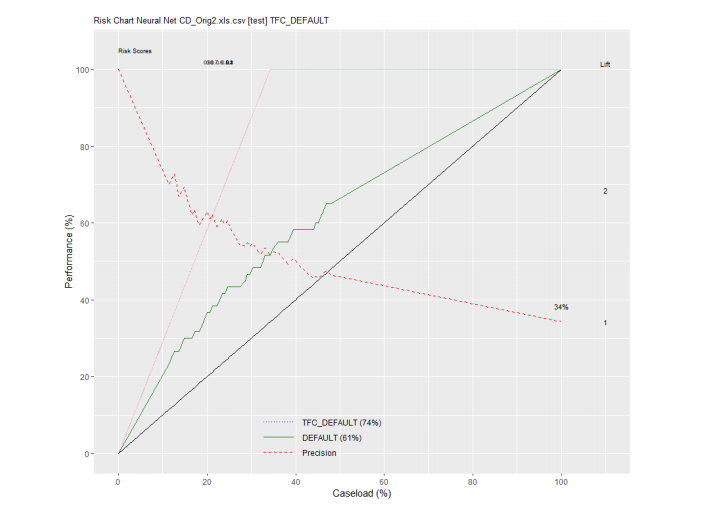

Scoring
The Project Team chose to score the model using a scorecard method by running a new regression to get the ten most important data points: Loan Amount, Checking Acct, Age, Loan Duration, Credit History, Employment, Savings Account, Installment Rate, Present Residence, and Job.
Next, the variables, with equal weight levels, were binned using the weight of evidence (WOE) binning technique. The WOE is a simple formula that calculates the importance of an independent variable to the dependent variable.


The charts below show how well the model performed. It appears that the test and trainin¬g data are very similar. Both the training and test data proved that the model can discern from a good-risk or bad-risk customer data 80% of the time.

Performance Evaluation
The performance evaluation ( perf_psi ) calculates the stability for the score and variables. It is used to run ongoing tests on the model to ensure the data received from the population does not change. This is important because overtime the data will change and the model should be tested and calibrated often. The formula is as follows:
When the PSI is less than 0.1 there is no real change in new data. When the PSI reaches 0.1 - 0.25 there is some minor change, and the model should be evaluated. Anything greater than 0.25 signifies a major change and model will need to be changed.
The PSI score for this model is fine at this time, however as previously stated, this should be tested often.
Risk Charts
The use of a risk chart is most helpful when evaluating models of fraud. As seen below:
